长鑫存储10大核心供应商
时长 03:55 · 分辨率 852x480 · 生成于 2026-07-06 | 来源
ref/BV1fj5f6iEH5.mp4· 视频链接
概述
本文基于长鑫科技（CXMT）招股书及相关公开信息，深度拆解这家正在重塑中国半导体格局的巨头。长鑫科技在2026年第一季度营收达508亿元，同比增长超七倍，上半年预估净利润达500至570亿元。其千亿级资本开支正带动国产半导体设备与材料产业链实现从点状突破到全链条闭环的跃升。以下按排名梳理其十大核心供应商，涵盖设备、材料、封测及销售环节。
一、巨头崛起：长鑫科技的“狂飙”时刻
- 业绩爆发：2026年Q1营收508亿元，同比增长719%；上半年预估净利润500至570亿元。
- 巨额研发：累计研发投入188.67亿元，占营收33.11%；募资295亿元用于扩产。
- 工艺突破：三年内实现从19nm到DDR5/LPDDR5的四代工艺量产。
- 采购结构：设备采购占比超过65%，材料端约20%，其余为封测与厂务。国产化率从不足30%跃升至超过70%。
二、十大核心供应商排名
第十名：兆易创新 —— 制造与销售的深度绑定
- 核心地位：国内NOR Flash与MCU双料第一；长鑫第十大股东（持股1.80%）。
- 业务增量：DRAM代销为最大收入增量，2024年销售收入超50亿元，预计2026年冲击150亿元。
- 风险提示：代销模式利润率仅1.66%，且代销协议存在到期风险。
第九名：长电科技 —— 高端封测的核心枢纽
- 行业地位：全球封测第三、国内第一；承接长鑫外包核心业务。
- 业绩数据：2024年总营收约296亿元，存储封测占比约18%（约53亿元）。
- 技术红利：DDR5时代先进封装（FCCSP、PoP）单颗价值量较DDR4提升超30%；合肥扩建产线预计2026年底投产，产能翻倍。
第八名：雅克科技 —— 突破垄断的“材料魔法师”
- 核心产品：前驱体材料，收购韩国UPChemical切入核心工艺，打破海外垄断。
- 业绩数据：半导体材料业务年营收约18亿元，毛利率高达40%；宜兴二期投产后总产能拉升至500吨/年。
- 需求增长：DDR5电容从单层演进为多层堆叠，单颗芯片前驱体消耗量暴增约50%，量价齐升。
第七名：沪硅产业 —— 核心原料“大硅片”的主力
- 核心地位：国内首家实现300mm（12英寸）大硅片规模量产，月产能60万片。
- 供应关系：15%至20%产能特供长鑫；长鑫晶圆年产超120万片，年耗硅片150至180万片，对应采购额30至40亿元。
- 挑战：长鑫第四座工厂将带来每月10万片以上新增需求，但硅片领域仍受海外巨头及国内价格战双重夹击。
第六名：安集科技 —— 抛光液领域的“平坦化龙头”
- 核心产品：CMP抛光液与清洗液，国内龙头；长鑫CMP材料国产化率超80%。
- 产能与良率：CMP浆料年产能3万吨；新一代低缺陷铜阻挡层抛光液在DDR5产线上良率反馈已超越部分进口竞品。
- 成本数据：单颗DDR5需超30道CMP工序，材料成本约0.15至0.2美元；年采购额5至8亿元。
第五名：盛美上海 —— 独门秘籍把控“芯片沐浴”
- 核心地位：国内清洗设备技术最强，覆盖前道FEOL至后道BEOL。
- 份额争夺：长鑫合肥第四厂区预估采购清洗设备超30亿元，盛美有望拿下40%份额；但需警惕北方华创等国内同行的贴身肉搏竞争。
第四名：华海清科 —— 突破垄断的“平坦化巨匠”
- 核心地位：国内唯一12英寸CMP设备量产商，覆盖DDR4与DDR5全产线。
- 装机与订单：长鑫产线装机超80台，已交付价值超20亿元；新增产能对应CMP设备采购额预估40至50亿元。
- 技术前沿：最新Universal-300X系列正进行5nm以下制程验证。
第三名：拓荆科技 —— 原子级薄膜的“建筑师”
- 核心地位：国内薄膜沉积设备（CVD/PVD/ALD）龙头，全技术路线覆盖。
- 行业占比：薄膜设备占晶圆厂总投资20%至25%，为最大单一品类；双基地年产能超300台。
- 采购预期：长鑫新厂区蕴含超150亿元采购预期；ALD原子层沉积已几乎完全替代进口。
第二名：中微公司 —— 挑战极限深宽比的“雕刻家”
- 核心地位：国内刻蚀设备技术天花板，CCP刻蚀达国际一流水平。
- 装机与份额：长鑫产线装机超200台，占该类采购份额35%以上；深宽比超60:1。
- 爆发节点：2025年下半年DDR5产能拉升，单季出货超40台；长鑫新产能对应超200亿元刻蚀采购，中微有望拿下40%；但ICP刻蚀环节仍待全面突破。
第一名：北方华创 —— 无法撼动的“全能航母平台”
- 核心地位：国内设备最全的平台型龙头，覆盖前道一半以上工艺（薄膜、清洗、热处理、氧化扩散、刻蚀）。
- 供应份额：独占长鑫超30%总设备采购份额，为单一最大供应商；2026年Q1营收破百亿，同期再获50至60亿元订单。
- 护城河：全能型选手的“打包解决方案”免去繁琐设备整合，单品公司无法匹敌；未来五年潜在增量空间超360亿元。
- 注：高端光刻仍需依赖ASML，此为最后拼图。
三、终局视野：长鑫国产替代全景生态圈
| 环节 | 核心企业 |
|---|---|
| 设备 | 北方华创、中微公司、拓荆科技、华海清科、盛美上海 |
| 材料 | 安集科技、雅克科技、沪硅产业 |
| 封测与销售 | 长电科技、兆易创新 |
- 生态成型：从点状突破走向全链条闭环，设备端强势引领，材料端加速渗透。
- 板块共振：千亿级资本开支不仅造就长鑫，更托举整个A股半导体硬科技板块的未来。
- 价值底牌：在全球硅基争夺战中，供应链的深度绑定已成为国产力量的最强底牌。
四、关键术语速览
| 术语 | 说明 |
|---|---|
| DDR5/LPDDR5 | 第五代双倍数据率同步动态随机存储器 |
| CMP | 化学机械抛光，用于晶圆平坦化 |
| CVD/PVD/ALD | 化学气相沉积/物理气相沉积/原子层沉积，薄膜制备技术 |
| CCP/ICP | 电容耦合等离子体/电感耦合等离子体，刻蚀技术 |
| FCCSP/PoP | 倒装芯片级封装/堆叠封装，先进封装技术 |
| TSV | 硅通孔，用于3D封装 |
| NOR Flash/MCU | 非易失性存储器/微控制器 |
附录：原始提取素材
语音全文转写（带时间戳）
[00:00–00:00]大家好[00:00–00:04]今天我们来拆解一家正在重塑中国半导体格局的公司[00:04–00:05]长鑫科技[00:05–00:07]他刚披露招股书[00:07–00:09]2016年一季度营收508亿[00:09–00:11]同比增长超七倍[00:11–00:14]上半年预估净利润500-570亿[00:14–00:17]千亿级资本开支正在重绘国产硅基生命线[00:17–00:20]围绕这头巨兽的十大核心供应商[00:20–00:21]我们逐一梳理[00:21–00:23]先看长兴本身[00:23–00:27]三年内实现从19nm到DDR5的四代工艺量产[00:27–00:29]研发投入188亿[00:29–00:31]占营收33%[00:31–00:33]设备采购占6成5以上[00:33–00:35]材料端约两成[00:35–00:37]这意味着长兴花的每一分钱[00:37–00:39]都在喂养它背后的供应链[00:39–00:40]第十名[00:40–00:41]兆易创新[00:42–00:44]NORFlash和MCU国内双料第一[00:45–00:46]DRAM代销是最大增量[00:47–00:50]从长兴获得的销售收入2024年50亿起步[00:50–00:53]预计2026年冲击150亿[00:53–00:56]风险在于利润率仅1.66%[00:57–00:59]且代销协议有到期可能[00:59–01:00]第九名[01:00–01:01]长电科技[01:01–01:02]封测龙头[01:02–01:05]去年总营收约296亿[01:05–01:07]存储封测占18%[01:07–01:09]DDR50代的先进封装[01:09–01:10]让单科价值量比[01:10–01:12]DDR4提升超30%[01:12–01:13]增量确定[01:14–01:14]第八名[01:15–01:15]雅克科技[01:16–01:18]前驱体材料打破海外垄断[01:18–01:20]年营收约18亿[01:20–01:22]毛利率高达40%[01:22–01:25]以新三期投产后产能拉升至500吨[01:25–01:27]DDR50代前驱体消耗量[01:27–01:28]暴增约5成[01:28–01:29]量价齐升[01:29–01:30]第七名[01:30–01:31]沪硅产业[01:32–01:34]国内首家量产300毫米大硅片[01:34–01:36]月产能60万片[01:36–01:38]长兴第四座工厂[01:38–01:40]带来每月10万片以上新增需求[01:40–01:42]采购额30到40亿[01:42–01:43]但硅片赛道[01:43–01:45]同时受海外巨头[01:45–01:46]和国内价格夹击[01:47–01:47]第六名[01:47–01:48]安集科技[01:49–01:51]CMP抛光液国内龙头[01:51–01:53]长兴产线国产化率超8成[01:53–01:55]年产能3万吨[01:55–01:56]更关键的是[01:56–01:58]DDR5产线良率反馈[01:58–02:00]以超越部分进口竞品[02:00–02:01]第五名[02:01–02:02]盛美上海[02:02–02:04]清洗设备国内最强[02:04–02:06]长兴合肥第四厂区[02:06–02:07]预估采购超30亿[02:07–02:09]盛美有望拿下4成份额[02:10–02:12]但北方华创也在加速追赶[02:12–02:14]份额之争刚开始[02:14–02:15]第四名[02:15–02:16]华海清科[02:16–02:18]国内唯一量产12英寸[02:18–02:19]CMP设备[02:19–02:21]覆盖DDR4和[02:21–02:22]DDR5全产线[02:22–02:24]长兴装机超30台[02:24–02:25]已交付超20亿[02:26–02:27]新增产能对应采购额[02:27–02:28]40-50亿[02:29–02:31]最新Universal 300X[02:31–02:32]正做5nm以下验证[02:32–02:33]第三名[02:33–02:34]拓荆科技[02:35–02:36]薄膜成绩设备龙头[02:36–02:38]覆盖CVD[02:38–02:39]PVD[02:39–02:40]ALD全路线[02:40–02:41]薄膜设备[02:41–02:44]是晶圆厂投资最大单一品类[02:44–02:45]占2成以上[02:45–02:47]双基地年产能超300台[02:47–02:48]长兴新厂区[02:48–02:50]蕴含超150亿采购预期[02:50–02:53]ALD已几乎完全替代进口[02:53–02:54]第二名[02:54–02:55]中微公司[02:55–02:57]刻蚀设备天花板[02:57–02:58]CCP达国际一流[02:59–03:00]长兴装机超200台[03:01–03:02]深宽比超60比1[03:02–03:03]一季度营收[03:03–03:05]同比涨超9成[03:05–03:06]比海外便宜2成多[03:06–03:08]DDR5产能拉升后[03:08–03:10]单机出货量暴增超5倍[03:10–03:11]第一名[03:11–03:12]北方华创[03:12–03:13]全能航母[03:13–03:16]国内设备最全的平台型龙头[03:16–03:18]独占长兴约3成设备采购[03:18–03:20]单一最大供应商[03:20–03:21]一季度营收破百亿[03:22–03:24]同期再拿50-60亿订单[03:24–03:26]护城河再与打包解决方案[03:26–03:28]增量空间超360亿[03:28–03:30]高端光刻仍需ASML[03:31–03:32]这是最后拼图[03:32–03:33]最后看终局[03:34–03:36]从点状突破到全链条闭环[03:36–03:38]设备端强势引领[03:38–03:39]材料端加速渗透[03:40–03:42]千亿资本开支不止造就长兴[03:42–03:44]更多托举整个A股半导体硬[03:44–03:45]科技板块的未来[03:46–03:47]供应链深度绑定[03:47–03:49]已是国产力量最强底牌[03:49–03:53]以上就是长兴科技十大核心供应商全景梳理[03:53–03:54]下期再见
关键帧 + OCR
[00:00] 开卷有财价# / 2026年业绩炸裂IPO招股书深度分析 / 长鑫存储10大核心供应商 / 内容仅作科普，不作为投资建议 / 大家好今天我们来拆解一家正在重塑
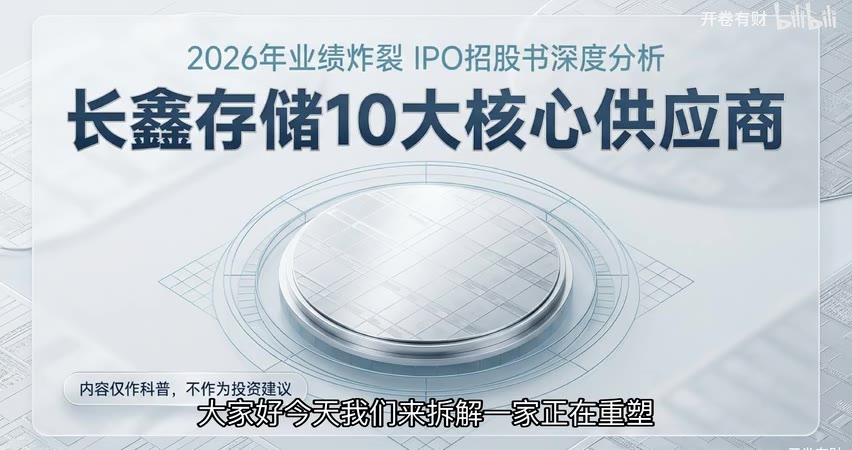
[00:03] 1巨头崛起：长鑫科技的“狂飙”时刻 / 开卷有财 / 国产化跃升轨迹 / 业绩炸裂 / 2026年Q1营收508亿（+719%）， / 上半年预估净利达500-570亿。 / 巨额研发 / 募资295亿扩产；累计研发投入 / 188.67亿（占营收33.11%） / 采购解构 / 2021年 / 2025年 / 设备>65%|材料约20%1 / 不足30% / 超70% / 其余为封测/厂务。 / 三年内实现四代工艺量产（19nm→DDR5/LPDDR5）。 / 中国半导体格局的公司长鑫科技塑整条国产硅基生命线. / 内容仅作科普，不作为投资建议
[00:06] 1巨头崛起：长鑫科技的“狂飙”时刻 / 开卷有财 / 国产化跃升轨迹 / 业绩炸裂 / 2026年Q1营收508亿（+719%）， / 上半年预估净利达500-570亿。 / 巨额研发 / 募资295亿扩产；累计研发投入 / 188.67亿（占营收33.11%） / 采购解构 / 2021年 / 2025年 / 设备>65%|材料约20%| / 其余为封测/厂务。 / 不足30% / 超70% / 三年内实现四代工艺量产（19nm→DDR5/LPDDR5）。 / 它刚披露招股书开支，正在重塑整条国产硅基生命线。 / 内容仅作科普，不作为投资建议
[00:09] 巨头崛起：长鑫科技的“狂飙”时刻 / 开卷有财 / 国产化跃升轨迹 / 业绩炸裂 / 2026年Q1营收508亿（+719%）， / 上半年预估净利达500-570亿。 / 巨额研发 / 募资295亿扩产；累计研发投入 / 188.67亿（占营收33.11%） / 采购解构 / 2021年 / 2025年 / 设备>65%|材料约20%1 / 其余为封测/厂务。 / 不足30% / 超70% / 三年内实现四代工艺量产（19nm→DDR5/LPDDR5）。 / 同比增长超7倍上半年预估净利润 / 整条国产硅基生命线。 / 内客仅作科普，不作为投资建议
[00:12] 巨头崛起：长鑫科技的“狂飙”时刻 / 开卷有财I / 国产化跃升轨迹 / 业绩炸裂 / 2026年Q1营收508亿（+719%）， / 上半年预估净利达500-570亿。 / 巨额研发 / 募资295亿扩产；累计研发投入 / 188.67亿（占营收33.11%） / 采购解构 / 2021年 / 2025年 / 设备>65%|材料约20%1 / 其余为封测/厂务。 / 不足30% / 超70% / 三年内实现四代工艺量产（19nm→DDR5/LPDDR5）。 / 500到570亿 / 资本开支，正在重塑整条国产硅基生命线。 / 内客仅作科普，不作为投资建议
[00:15] 巨头崛起：长鑫科技的“狂飙”时刻 / 开卷有财 / 国产化跃升轨迹 / 业绩炸裂 / 2026年Q1营收508亿（+719%）， / 上半年预估净利达500-570亿。 / 巨额研发 / 募资295亿扩产；累计研发投入 / 188.67亿（占营收33.11%） / 采购解构 / 2021年 / 2025年 / 设备>65%|材料约20%| / 不足30% / 其余为封测/厂务。 / 超70% / 三年内实现四代工艺量产（19nm→DDR5/LPDDR5）。 / 生命线围绕资本开支，正在重塑整条国产硅基生命线。 / 内客仅作科普，不作为投资建议
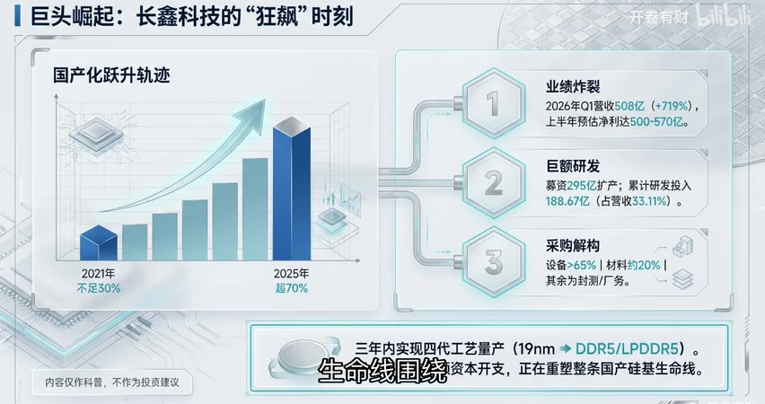
[00:18] 巨头崛起：长鑫科技的“狂飙”时刻 / 开卷有财 / 国产化跃升轨迹 / 业绩炸裂 / 2026年Q1营收508亿（+719%）， / 上半年预估净利达500-570亿。 / 巨额研发 / 募资295亿扩产；累计研发投入 / 188.67亿（占营收33.11%） / 采购解构 / 2021年 / 2025年 / 设备>65%|材料约20%| / 不足30% / 其余为封测/厂务。 / 超70% / 三年内实现四代工艺量产（19nm→DDR5/LPDDR5）。 / 这头巨兽的十大核心供应商我们 / 塑整条国产硅基生命线。 / 内客仅作科普，不作为投资建议
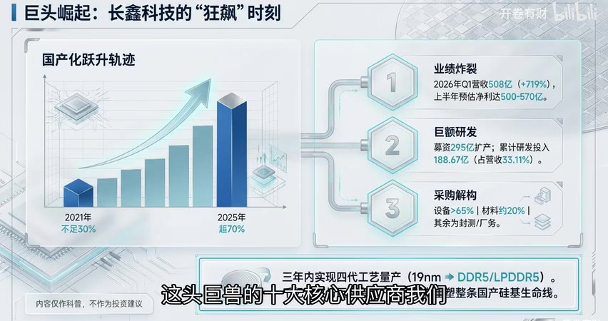
[00:21] 1巨头崛起：长鑫科技的“狂飙”时刻 / 开卷有财i / 国产化跃升轨迹 / 业绩炸裂 / 2026年Q1营收508亿（+719%）， / 上半年预估净利达500-570亿。 / 巨额研发 / 募资295亿扩产；累计研发投入 / 188.67亿（占营收33.11%） / 采购解构 / 2021年 / 2025年 / 设备>65%|材料约20%1 / 不足30% / 其余为封测/厂务。 / 超70% / 三年内实现四代工艺量产（19nm→DDR5/LPDDR5）。 / 先看长鑫本身三年内实现从 / 在重塑整条国产硅基生命线。 / 内容仅作科普，不作为投资建议
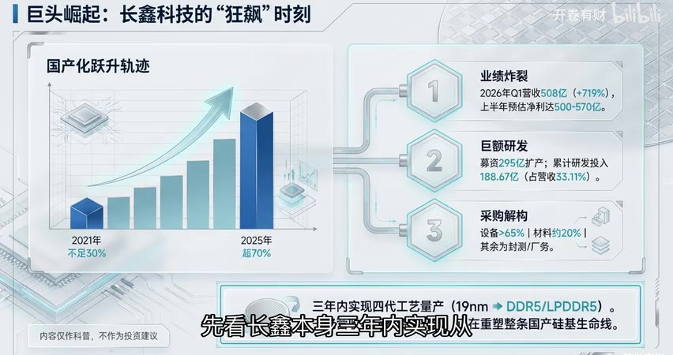
[00:24] 1巨头崛起：长鑫科技的“狂”时刻 / 开卷有财 / 国产化跃升轨迹 / 业绩炸裂 / 2026年Q1营收508亿（+719%）， / 上半年预估净利达500-570亿。 / 巨额研发 / 募资295亿扩产；累计研发投入 / 188.67亿（占营收33.11%） / 采购解构 / 2021年 / 2025年 / 设备>65%|材料约20%1 / 不足30% / 其余为封测/厂务。 / 超70% / 三年内实现四代工艺量产（19nm→DDR5/LPDDR5）。 / 19纳米到DDR5的四代亚艺量产整条国产硅基生命线. / 内容仅作科普，不作为投资建议
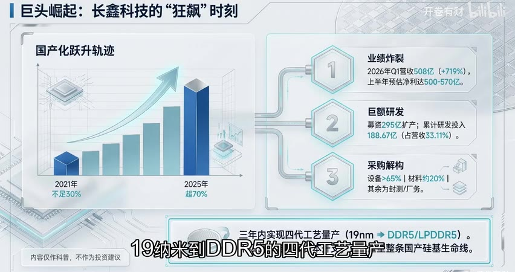
[00:27] 1巨头崛起：长鑫科技的“狂飙”时刻 / 开卷有财 / 国产化跃升轨迹 / 业绩炸裂 / 2026年Q1营收508亿（+719%）， / 上半年预估净利达500-570亿。 / 巨额研发 / 募资295亿扩产；累计研发投入 / 188.67亿（占营收33.11%） / 采购解构 / 2021年 / 2025年 / 设备>65%|材料约20%1 / 不足30% / 超70% / 其余为封测/厂务。 / 三年内实现四代工艺量产（19nm→DDR5/LPDDR5）。 / 研发投入188亿占营收33%设备 / 整条国产硅基生命线。 / 内容仅作科普，不作为投资建议
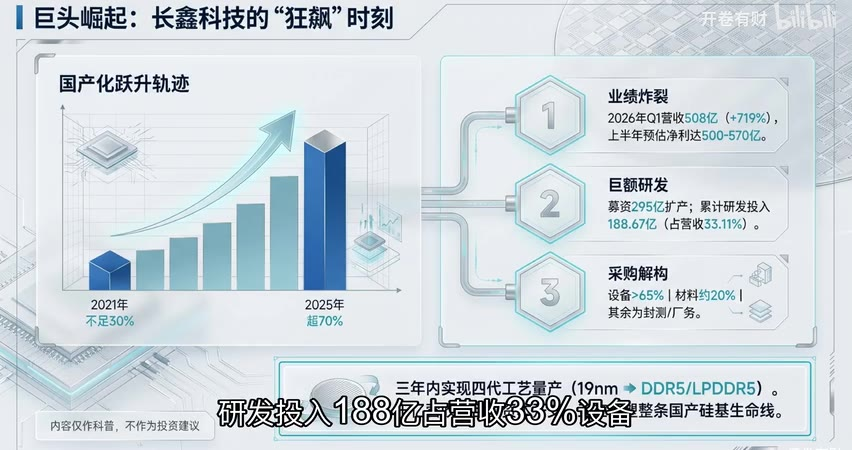
[00:30] 巨头崛起：长鑫科技的“狂”时刻 / 开卷有财 / 国产化跃升轨迹 / 业绩炸裂 / 2026年Q1营收508亿（+719%）， / 上半年预估净利达500-570亿。 / 巨额研发 / 募资295亿扩产；累计研发投入 / 188.67亿（占营收33.11%） / 采购解构 / 2021年 / 2025年 / 设备>65%|材料约20%| / 不足30% / 超70% / 其余为封测/厂务。 / 三年内实现四代工艺量产（19nm→DDR5/LPDDR5）。 / 采购占6成5以上材料端约两成 / 塑整条国产硅基生命线。 / 内容仅作科普，不作为投资建议
[00:33] 巨头崛起：长鑫科技的“狂飙”时刻 / 开卷有财 / 国产化跃升轨迹 / 业绩炸裂 / 2026年Q1营收508亿（+719%）， / 上半年预估净利达500-570亿。 / 巨额研发 / 募资295亿扩产；累计研发投入 / 188.67亿（占营收33.11%） / 采购解构 / 2021年 / 2025年 / 设备>65%|材料约20%| / 其余为封测/厂务。 / 不足30% / 超70% / 三年内实现四代工艺量产（19nm→DDR5/LPDDR5）。 / 这意味巨额资本开支，正在重塑整条国产硅基生命线。 / 内容仅作科普，不作为投资建议
[00:36] 1巨头崛起：长鑫科技的“狂飙”时刻 / 开卷有财 / 国产化跃升轨迹 / 业绩炸裂 / 2026年Q1营收508亿（+719%）， / 上半年预估净利达500-570亿。 / 巨额研发 / 募资295亿扩产；累计研发投入 / 188.67亿（占营收33.11%） / 采购解构 / 2021年 / 2025年 / 设备>65%|材料约20%| / 不足30% / 超70% / 其余为封测/厂务。 / 三年内实现四代工艺量产（19nm→DDR5/LPDDR5）。 / 着长鑫花的每一分钱都在喂养它背后 / 条国产硅基生命线。 / 内容仅作科普，不作为投资建议
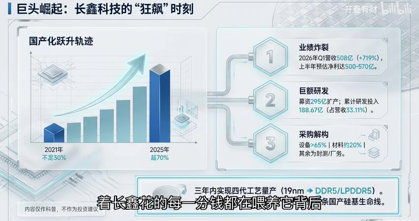
[00:39] 开卷有财 / 第十名：兆易创新 / 斤一制造与销售的深度绑定 / 国内NORFlash/MCU双料第一| / 长鑫制造 / 长鑫第十大股东（持股1.80%） / DRAM销售收入 / 2024年超50亿 / 预计2026年冲击150亿 / 2024年整体毛利率 / 38.65% / 1.66% / 兆易销售 / 【商业洞察】代销模式是其当前最大收入增量，但也 / 第10名兆易创新NR及代销协议到期的潜在风险。 / 内容仅作科普，不作为投资建议
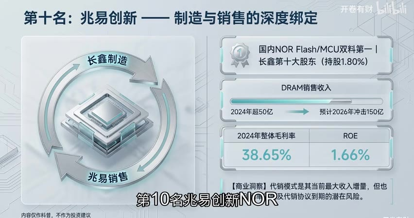
[00:42] 开卷有财 / 第十名：兆易创新 / 斤一制造与销售的深度绑定 / 国内NORFlash/MCU双料第一| / 长鑫制造 / 长鑫第十大股东（持股1.80%） / DRAM销售收入 / 2024年超50亿 / 预计2026年冲击150亿 / 2024年整体毛利率 / 38.65% / 1.66% / 兆易销售 / 【商业洞察】代销模式是其当前最大收入增量，但也 / Flash和MCU国内双料第D / 办议到期的潜在风险。 / 内容仅作科普，不作为投资建议
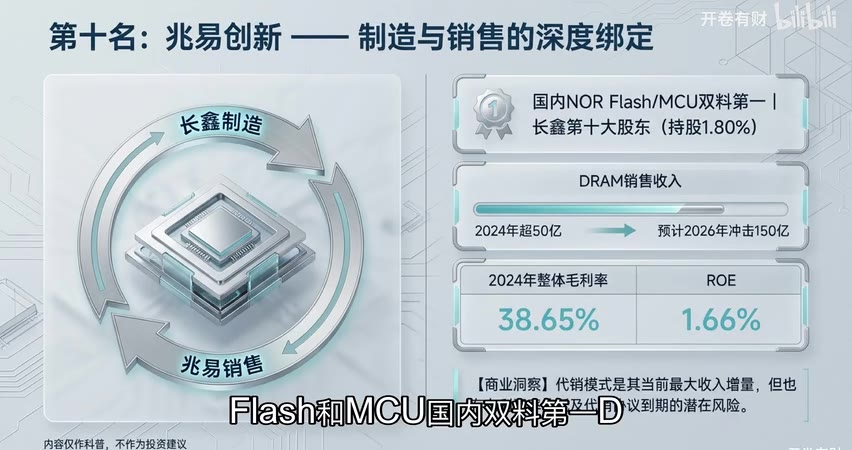
[00:45] 开卷有财 / 第十名：兆易创新一制造与销售的深度绑定 / 国内NORFlash/MCU双料第一| / 长鑫制造 / 长鑫第十大股东（持股1.80%） / DRAM销售收入 / 2024年超50亿 / 预计2026年冲击150亿 / 2024年整体毛利率 / 38.65% / 1.66% / 兆易销售 / 【商业洞察】代销模式是其当前最大收入增量，但也 / 内容仅作科普，不作为投资建议
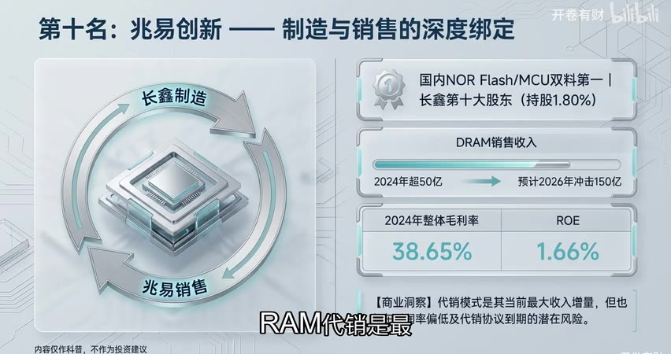
[00:48] 开卷有财 / 第十名：兆易创新一制造与销售的深度绑定 / 国内NORFlash/MCU双料第一| / 长鑫制造 / 长鑫第十大股东（持股1.80%） / DRAM销售收入 / 2024年超50亿 / 预计2026年冲击150亿 / 2024年整体毛利率 / 38.65% / 1.66% / 兆易销售 / 【商业洞察】代销模式是其当前最大收入增量，但也 / 2024年50亿起步预计 / 及代销协议到期的潜在风险。 / 内容仅作科普，不作为投资建议
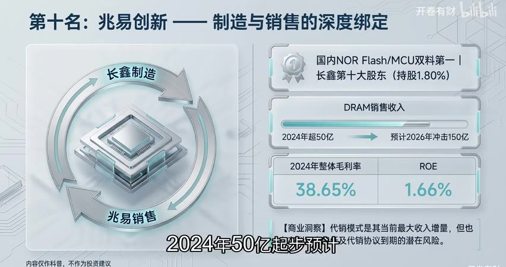
[00:51] 开卷有财 / 第十名：兆易创新 / 斤一制造与销售的深度绑定 / 国内NORFlash/MCU双料第一| / 长鑫制造 / 长鑫第十大股东（持股1.80%） / DRAM销售收入 / 2024年超50亿 / 预计2026年冲击150亿 / 2024年整体毛利率 / 38.65% / 1.66% / 兆易销售 / 【商业洞察】代销模式是其当前最大收入增量，但也 / 2026年冲击 / 润率偏低及代销协议到期的潜在风险。 / 内容仅作科普，不作为投资建议
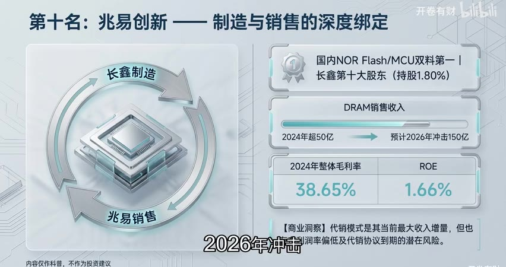
[00:54] 开卷有财 / 第十名：兆易创新一制造与销售的深度绑定 / 国内NORFlash/MCU双料第一| / 长鑫制造 / 长鑫第十大股东（持股1.80%） / DRAM销售收入 / 2024年超50亿 / 预计2026年冲击150亿 / 2024年整体毛利率 / 38.65% / 1.66% / 兆易销售 / 【商业洞察】代销模式是其当前最大收入增量，但也 / 150亿风险在于利润率仅1 / 代销协议到期的潜在风险。 / 内容仅作科普，不作为投资建议
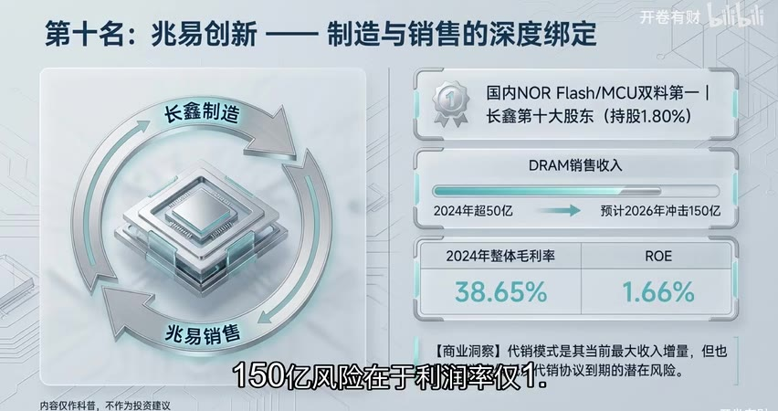
[00:57] 开卷有财 / 第十名：兆易创新一制造与销售的深度绑定 / 国内NORFlash/MCU双料第一| / 长鑫制造 / 长鑫第十大股东（持股1.80%） / DRAM销售收入 / 2024年超50亿 / 预计2026年冲击150亿 / 2024年整体毛利率 / 38.65% / 1.66% / 兆易销售 / 【商业洞察】代销模式是其当前最大收入增量，但也 / 66%且代销协议有到期可能 / 销协议到期的潜在风险。 / 内容仅作科普，不作为投资建议
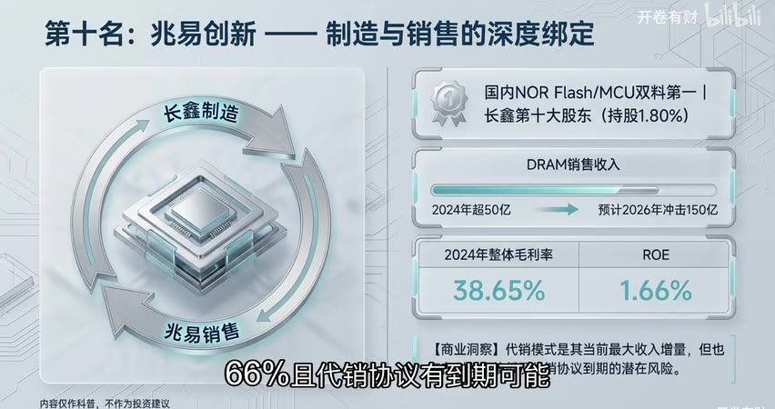
[01:00] 开卷有财 / 第九名：长电科技一高端封测的核心枢纽 / 全球封测第三、国内第一|承接长鑫外包核心业务 / 2024总营收约296亿 / TSV硅通孔 / 存储封测占比约18%（约53亿） / Micro- / 合肥扩建产线预计2026年底投产，产能翻倍。 / bumping微 / 凸块 / InsightCallout / 【技术红利】DDR5时代的FCCSP、PoP封装先进工 / 艺，单颗封装价值量较DDR4提升30%以上。国产替 / 第9名长电科技封测龙 / 但增量确定。 / 内容仅作科普，不作为投资建议
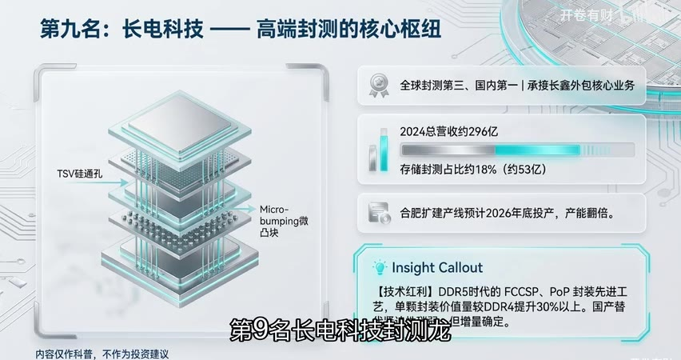
[01:03] 开卷有财 / 第九名：长电科技一高端封测的核心枢纽 / 全球封测第三、国内第一|承接长鑫外包核心业务 / 2024总营收约296亿 / TSV硅通孔 / 存储封测占比约18%（约53亿） / Micro- / 合肥扩建产线预计2026年底投产，产能翻倍。 / bumping微 / 凸块 / InsightCallout / 【技术红利】DDR5时代的FCCSP、PoP封装先进工 / 艺，单颗封装价值量较DDR4提升30%以上。国产替 / 18%DDR5时 / 硝弱，但增量确定。 / 内容仅作科普，不作为投资建议
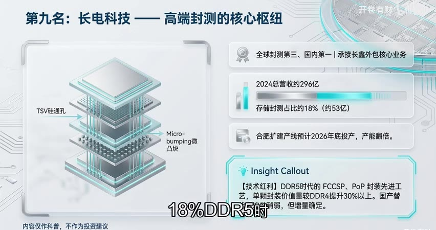
[01:06] 开卷有财 / 第九名：长电科技一高端封测的核心枢纽 / 全球封测第三、国内第一|承接长鑫外包核心业务 / 2024总营收约296亿 / TSV硅通孔 / 存储封测占比约18%（约53亿） / Micro- / 合肥扩建产线预计2026年底投产，产能翻倍。 / bumping微 / 凸块 / InsightCallout / 【技术红利】DDR5时代的FCCSP、PoP封装先进工 / 艺，单颗封装价值量较DDR4提升30%以上。国产替 / 代的先进封装让单颗价值量比定 / 内容仅作科普，不作为投资建议
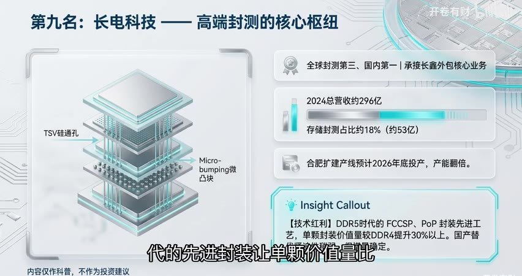
[01:09] 开卷有财 / 第九名：长电科技一高端封测的核心枢纽 / 全球封测第三、国内第一|承接长鑫外包核心业务 / 2024总营收约296亿 / TSV硅通孔 / 存储封测占比约18%（约53亿） / Micro- / 合肥扩建产线预计2026年底投产，产能翻倍。 / bumping微 / 凸块 / InsightCallout / 【技术红利】DDR5时代的FCCSP、PoP封装先进工 / 艺，单颗封装价值量较DDR4提升30%以上。国产替 / 代的先进封装让单颗价值量比定 / 内容仅作科普，不作为投资建议
[01:12] 开卷有财 / 第九名：长电科技一高端封测的核心枢纽 / 全球封测第三、国内第一|承接长鑫外包核心业务 / 2024总营收约296亿 / TSV硅通孔 / 存储封测占比约18%（约53亿） / Micro- / 合肥扩建产线预计2026年底投产，产能翻倍。 / bumping微 / 凸块 / InsightCallout / 【技术红利】DDR5时代的FCCSP、PoP封装先进工 / 艺，单颗封装价值量较DDR4提升30%以上。国产替 / DDR4提升超30%增量确定 / 确定。 / 内容仅作科普，不作为投资建议
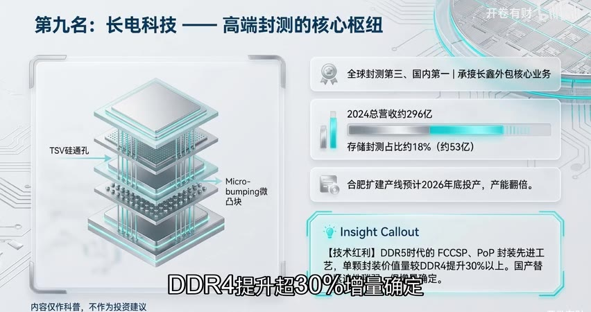
[01:15] 开卷有财 / 第八名：雅克科技一突破垄断的“材料魔法师 / 收购韩国UPChemical切入核心工艺 / 前驱体 / 半导体材料业务年营收约18亿 / 毛利率高达40% / 打破海外垄断 / 前驱体总产能拉升至500吨/年（宜兴二期投产）。 / InsightCallout / STI隔离填充 / 【消耗倍增】DDR5电容从单层演进为多层堆叠， / 单颗芯片前驱体消耗量暴增约50%。 / 材料打破海外垄断年营收约18亿 / 内容仅作科普，不作为投资建议
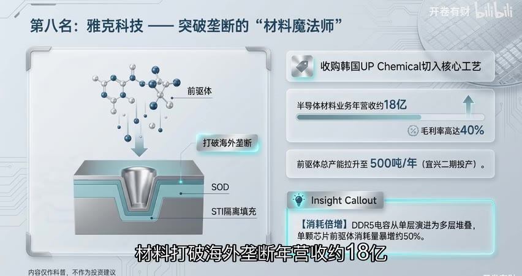
[01:18] 开卷有财 / 第八名：雅克科技一突破垄断的“材料魔法师 / 收购韩国UPChemical切入核心工艺 / 前驱体 / 半导体材料业务年营收约18亿 / 毛利率高达40% / 打破海外垄断 / 前驱体总产能拉升至500吨/年（宜兴二期投产）。 / InsightCallout / STI隔离填充 / 【消耗倍增】DDR5电容从单层演进为多层堆叠， / 单颗芯片前驱体消耗量暴增约50%。 / 毛利率高达40%宜兴三期投 / 内容仅作科普，不作为投资建议
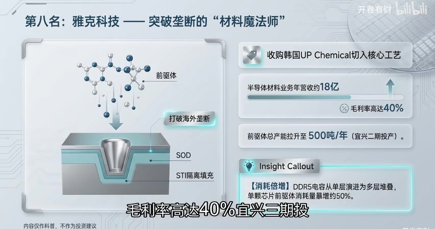
[01:21] 开卷有财 / 第八名：雅克科技一突破垄断的“材料魔法师 / 收购韩国UPChemical切入核心工艺 / 前驱体 / 半导体材料业务年营收约18亿 / 毛利率高达40% / 打破海外垄断 / 前驱体总产能拉升至500吨/年（宜兴二期投产）。 / InsightCallout / STI隔离填充 / 【消耗倍增】DDR5电容从单层演进为多层堆叠， / 单颗芯片前驱体消耗量暴增约50%。 / 内容仅作科普，不作为投资建议
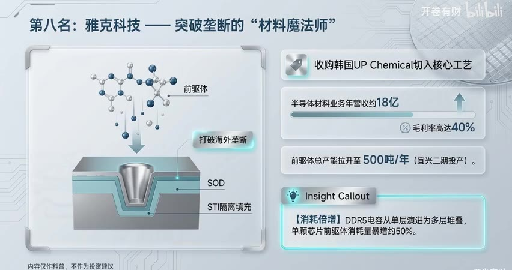
[01:24] 开卷有财 / 第八名：雅克科技一突破垄断的“材料魔法师” / 收购韩国UPChemical切入核心工艺 / 前驱体 / 半导体材料业务年营收约18亿 / 毛利率高达40% / 打破海外断 / 前驱体总产能拉升至500吨/年（宜兴二期投产）。 / InsightCallout / STI隔离填充 / 【消耗倍增】DDR5电容从单层演进为多层堆叠， / 单颗芯片前驱体消耗量暴增约50%。 / DDR5时代前驱体消耗 / 内容仅作科普，不作为投资建议
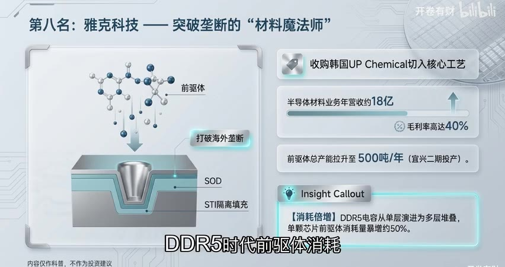
[01:27] 开卷有财 / 第八名：雅克科技一突破垄断的“材料魔法师” / 收购韩国UPChemical切入核心工艺 / 前驱体 / 半导体材料业务年营收约18亿 / 毛利率高达40% / 打破海外断 / 前驱体总产能拉升至500吨/年（宜兴二期投产）。 / InsightCallout / STI隔离填充 / 【消耗倍增】DDR5电容从单层演进为多层堆叠， / 单颗芯片前驱体消耗量暴增约50%。 / 量暴增约5成量价齐升 / 内容仅作科普，不作为投资建议
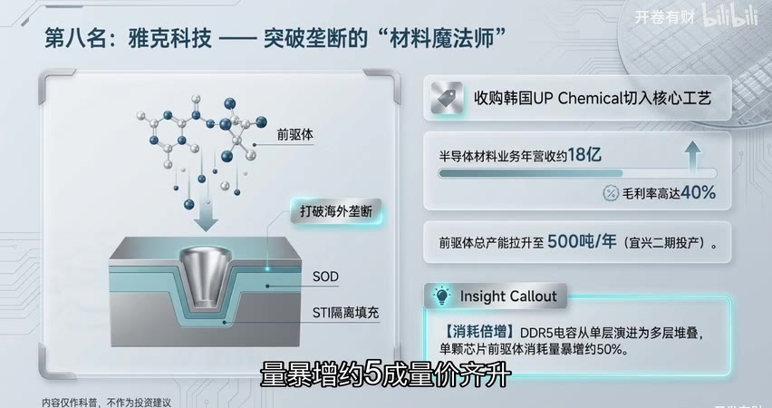
[01:30] 开卷有财 / 第八名：雅克科技一突破垄断的“材料魔法师 / 收购韩国UPChemical切入核心工艺 / 前驱体 / 半导体材料业务年营收约18亿 / 毛利率高达40% / 打破海外垄断 / 前驱体总产能拉升至500吨/年（宜兴二期投产）。 / InsightCallout / STI隔离填充 / 【消耗倍增】DDR5电容从单层演进为多层堆叠， / 单颗芯片前驱体消耗量暴增约50%。 / 第7名沪硅产业国内首家 / 内容仅作科普，不作为投资建议
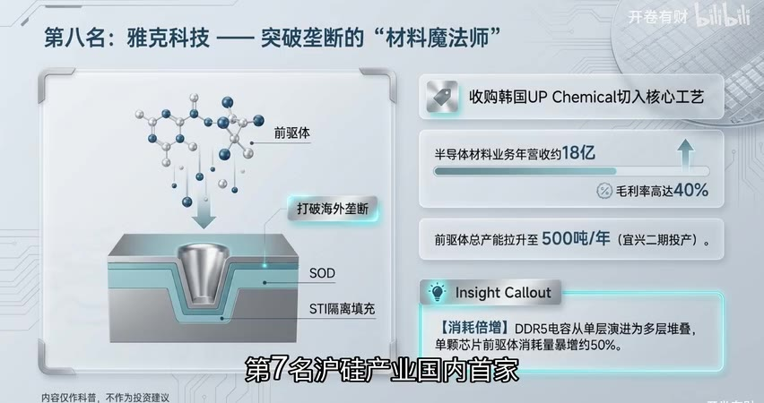
[01:33] 第七名：沪硅产业一核心原料“大硅片”的主力 / 开卷有财# / 国内首家实现300mm（12英寸）大硅片规模量产 / 300mm硅片产能60万片/月 / 15%-20%特供长鑫 / 长鑫晶圆年产超120万片 / 覆盖28nm至14nm逻辑芯片及长鑫DRAM验证。 / 年耗硅片150-180万片 / Insight Callout / 【产能饥渴】长鑫规划的第四座工厂将带来每月 / 对应采购颜30-40亿 / 10万片以上的巨量新增需求。但硅片领域仍受海 / 片长鑫第 / 外巨头及国内价格战双重夹击。 / 内容仅作科普，不作为投资建议
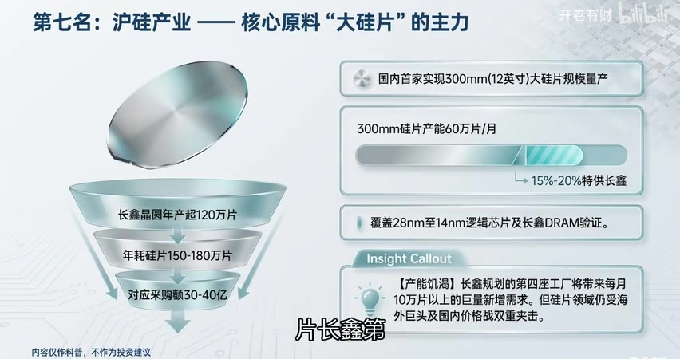
[01:36] 第七名：沪硅产业一核心原料“大硅片”的主力 / 开卷有财 / 国内首家实现300mm（12英寸）大硅片规模量产 / 300mm硅片产能60万片/月 / 15%-20%特供长鑫 / 长鑫晶圆年产超120万片 / 覆盖28nm至14nm逻辑芯片及长鑫DRAM验证。 / 年耗硅片150-180万片 / Insight Callout / 【产能饥渴】长鑫规划的第四座工厂将带来每月 / 对应采购颜30-40亿 / 10万片以上的巨量新增需求。但硅片领域仍受海 / 内容仅作科普，不作为投资建议
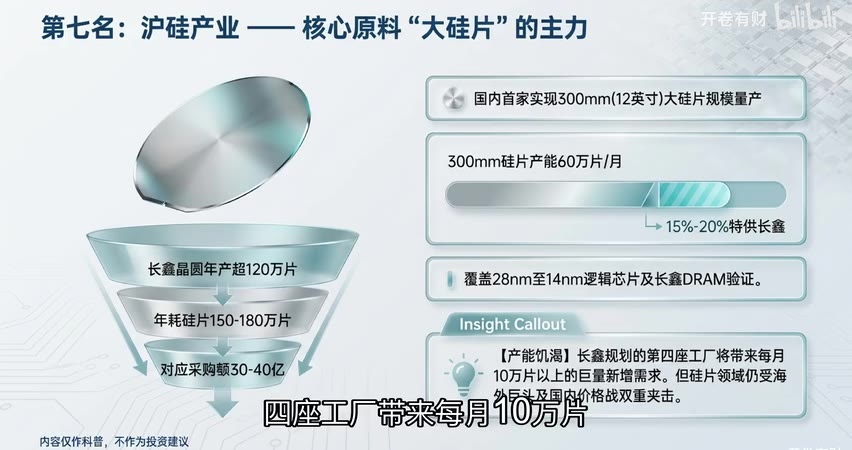
[01:39] 第七名：沪硅产业一核心原料“大硅片”的主力 / 开卷有财 / 国内首家实现300mm（12英寸）大硅片规模量产 / 300mm硅片产能60万片/月 / 15%-20%特供长鑫 / 长鑫晶圆年产超120万片 / 覆盖28nm至14nm逻辑芯片及长鑫DRAM验证。 / 年耗硅片150-180万片 / Insight Callout / 【产能饥渴】长鑫规划的第四座工厂将带来每月 / 对应采购颜30-40亿 / 10万片以上的巨量新增需求。但硅片领域仍受海 / 及国内价格战双重夹击。 / 求采购额30到40 / 内容仅作科普，不作为投资建议
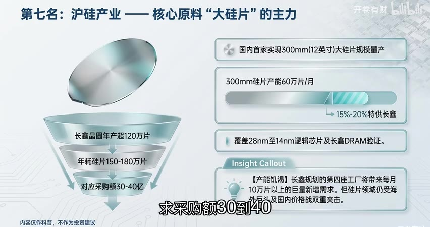
[01:42] 第七名：沪硅产业一核心原料“大硅片”的主力 / 开卷有财 / 国内首家实现300mm（12英寸）大硅片规模量产 / 300mm硅片产能60万片/月 / 15%-20%特供长鑫 / 长鑫晶圆年产超120万片 / 覆盖28nm至14nm逻辑芯片及长鑫DRAM验证。 / 年耗硅片150-180万片 / Insight Callout / 【产能饥渴】长鑫规划的第四座工厂将带来每月 / 对应采购颜30-40亿 / 10万片以上的巨量新增需求。但硅片领域仍受海 / 亿但硅片 / 外巨头及国内价格战双重夹击。 / 内容仅作科普，不作为投资建议
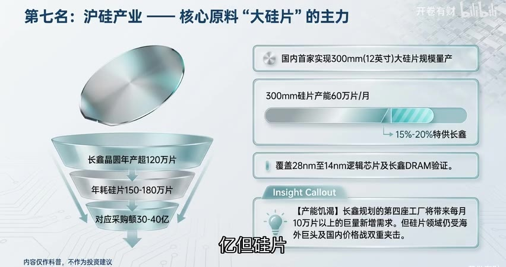
[01:45] 第七名：沪硅产业一核心原料“大硅片”的主力 / 开卷有财 / 国内首家实现300mm（12英寸）大硅片规模量产 / 300mm硅片产能60万片/月 / 15%-20%特供长鑫 / 长鑫晶圆年产超120万片 / 覆盖28nm至14nm逻辑芯片及长鑫DRAM验证。 / 年耗硅片150-180万片 / Insight Callout / 【产能饥渴】长鑫规划的第四座工厂将带来每月 / 对应采购额30-40亿 / 10万片以上的巨量新增需求。但硅片领域仍受海 / 外巨头及国内价格战双重夹击。 / 内容仅作科普，不作为投资建议
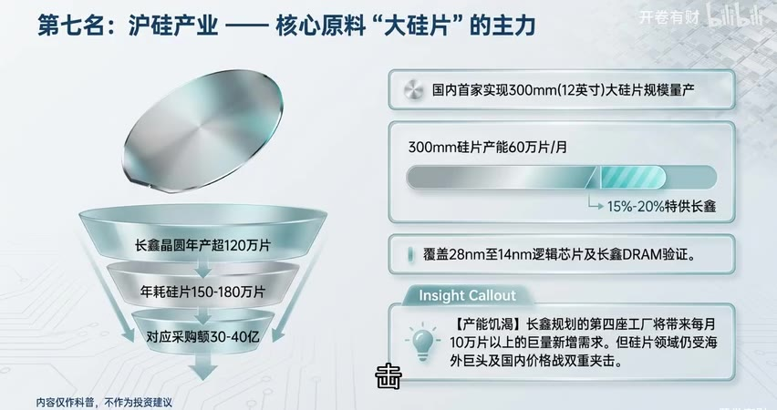
[01:48] 开卷有财 / 第六名：安集科技一抛光液领域的“平坦化龙头 / 单颗DDR5=需超30道CMP工序 / 国内CMP抛光液/清洗液龙头|长鑫CMP材料主力（国产化率>80%） / TrendBar / 单颗DDR5材料 / 月产20万片 / 成本$0.15-$0.2 / 年采购额5-8亿 / StatBox / 净利率：14.20% / CMP浆料年产能：3万吨 / InsightCallout / 【技术迭代】新一代低缺陷铜阻挡层抛光液，在长 / 鑫DDR5产线上的良率反馈已超越部分进口竞品。 / 抛光液国内龙头长鑫 / 内容仅作科普，不作为投资建议
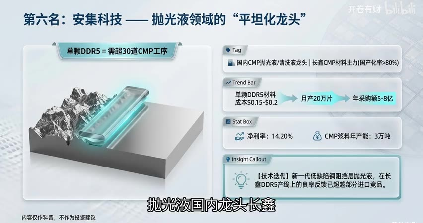
[01:51] 开卷有财 / 第六名：安集科技一抛光液领域的“平坦化龙头 / 单颗DDR5=需超30道CMP工序 / 国内CMP抛光液/清洗液龙头|长鑫CMP材料主力（国产化率>80%） / TrendBar / 单颗DDR5材料 / 月产20万片 / 成本$0.15-$0.2 / 年采购额5-8亿 / StatBox / 净利率：14.20% / CMP浆料年产能：3万吨 / InsightCallout / 【技术迭代】新一代低缺陷铜阻挡层抛光液，在长 / 鑫DDR5产线上的良率反馈已超越部分进口竞品。 / 产线国产化率超8成年产能3万吨 / 内容仅作科普，不作为投资建议
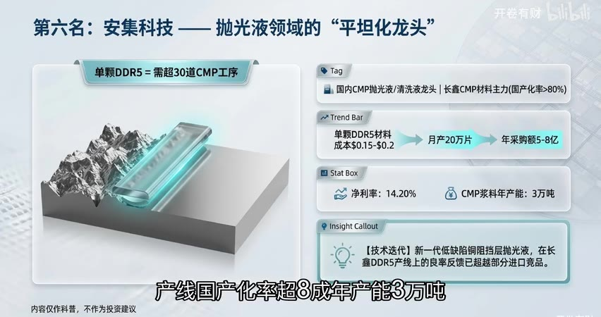
[01:54] 开卷有财 / 第六名：安集科技一抛光液领域的“平坦化龙头 / 单颗DDR5=需超30道CMP工序 / 国内CMP抛光液/清洗液龙头|长鑫CMP材料主力（国产化率>80%） / TrendBar / 单颗DDR5材料 / 月产20万片 / 成本$0.15-$0.2 / 年采购额5-8亿 / StatBox / 净利率：14.20% / CMP浆料年产能：3万吨 / InsightCallout / 【技术迭代】新一代低缺陷铜阻挡层抛光液，在长 / 鑫DDR5产线上的良率反馈已超越部分进口竞品。 / 键的是DDR5产线上良率反馈已 / 内容仅作科普，不作为投资建议
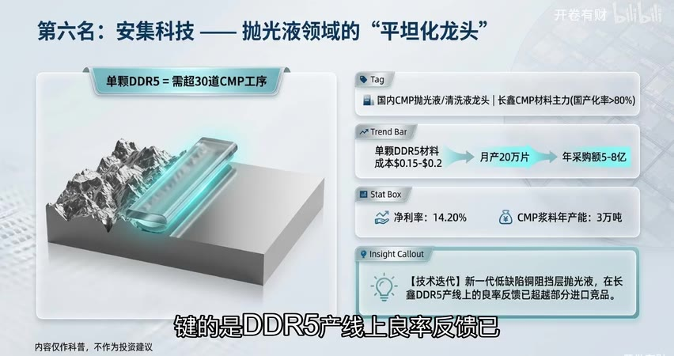
[01:57] 开卷有财 / 第六名：安集科技一抛光液领域的“平坦化龙头 / 单颗DDR5=需超30道CMP工序 / 国内CMP抛光液/清洗液龙头|长鑫CMP材料主力（国产化率>80%） / TrendBar / 单颗DDR5材料 / 月产20万片 / 成本$0.15-$0.2 / 年采购额5-8亿 / StatBox / 净利率：14.20% / CMP浆料年产能：3万吨 / InsightCallout / 【技术迭代】新一代低缺陷铜阻挡层抛光液，在长 / 鑫DDR5产线上的良率反馈已超越部分进口竞品。 / 键的是DDR5产线上良率反馈已 / 内容仅作科普，不作为投资建议
[02:00] 第五名：盛美上海一独门秘籍把控“芯片沐浴 / 国内清洗设备技术最强|覆盖前道FEOL至后道BEOL / 长鑫采购份额跨越 / 25% / 10% / SAPS兆声波 / 26年Q1营收暴涨： / 净利率： / 约78% / 12.80% / TEBO时序能激波 / InsightCallout / 【份额争夺】长鑫合肥第四厂区预估采购清洗设备 / 超30亿，盛美有望拿下40%份额。同时需警惕国 / 第5名盛美上海清洗 / 内同行（如北华创）开始的贴身肉搏竞争。 / 内容仅作科普，不作为投资建议
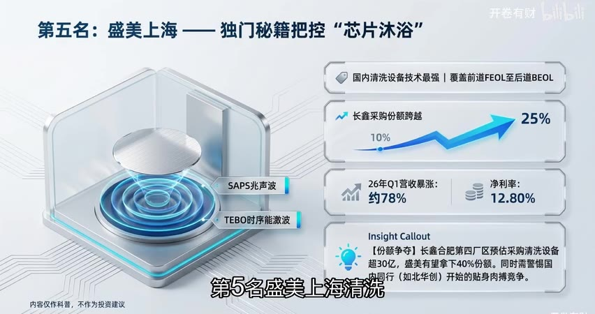
[02:03] 第五名：盛美上海一独门秘籍把控“芯片沐浴 / 国内清洗设备技术最强|覆盖前道FEOL至后道BEOL / 长鑫采购份额跨越 / 25% / 10% / SAPS兆声波 / 26年Q1营收暴涨： / 净利率： / 约78% / 12.80% / TEBO时序能激波 / InsightCallout / 【份额争夺】长鑫合肥第四厂区预估采购清洗设备 / 超30亿，盛美有望拿下40%份额。同时需警惕国 / 合肥第四厂区预估采购超30亿 / 创）开始的贴身肉搏竞争。 / 内容仅作科普，不作为投资建议
[02:06] 开卷有贴 / 第五名：盛美上海一独门秘籍把控“芯片沐浴 / 国内清洗设备技术最强|覆盖前道FEOL至后道BEOL / 长鑫采购份额跨越 / 25% / 10% / SAPS兆声波 / 26年Q1营收暴涨： / 净利率： / 约78% / 12.80% / TEBO时序能激波 / InsightCallout / 【份额争夺】长鑫合肥第四厂区预估采购清洗设备 / 超30亿，盛美有望拿下40%份额。同时需警惕国 / 合肥第四厂区预估采购超30亿 / 创）开始的贴身肉搏竞争。 / 内容仅作科普，不作为投资建议
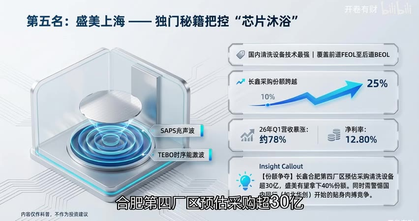
[02:09] 开卷有贴 / 第五名：盛美上海一独门秘籍把控“芯片沐浴 / 国内清洗设备技术最强|覆盖前道FEOL至后道BEOL / 长鑫采购份额跨越 / 25% / 10% / SAPS兆声波 / 26年Q1营收暴涨： / 净利率： / 约78% / 12.80% / TEBO时序能激波 / InsightCallout / 【份额争夺】长鑫合肥第四厂区预估采购清洗设备 / 超30亿，盛美有望拿下40%份额。同时需警惕国 / 额但北方华创也在加速追 / 内同行如北华创）开始的贴身肉搏竞争。 / 内客仅作科普，不作为投资建议
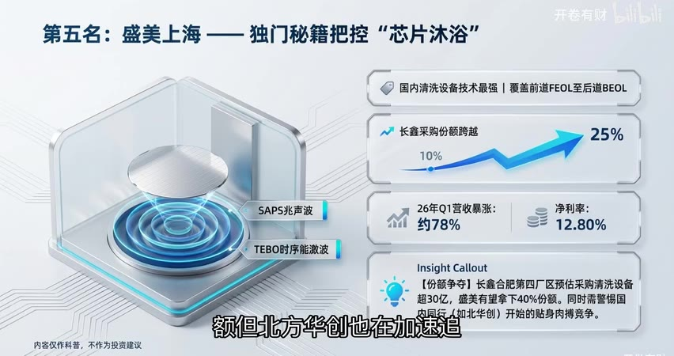
[02:12] 开卷有 / 第五名：盛美上海一独门秘籍把控“芯片沐浴 / 国内清洗设备技术最强|覆盖前道FEOL至后道BEOL / 长鑫采购份额跨越 / 25% / 10% / SAPS兆声波 / 26年Q1营收暴涨： / 净利率： / 约78% / 12.80% / TEBO时序能激波 / InsightCallout / 【份额争夺】长鑫合肥第四厂区预估采购清洗设备 / 超30亿，盛美有望拿下40%份额。同时需警惕国 / 赶份额之争刚开始 / 内同行（如北华创）开始的贴身肉搏竞争。 / 内客仅作科普，不作为投资建议
[02:15] 开卷有财 / 第四名：华海清科一突破垄断的“平坦化巨匠 / 国内唯一12英寸CMP设备量产商|覆盖DDR4与DDR5全产线 / TrendBar / 长鑫产线装机超80台→对应已交付价值超20亿 / StatBox / 单台设备价值： / ROE:4.33% / 2500-3500万 / （盈利质量领跑） / Insight Callout / ~65% / 【未来订单】长鑫新增产能对应CMP设备采购额预估40- / 0% / 50亿。公司最新Universal-300X系列正进行5nm以下制 / (2021) / 第4名华海清科国内唯一 / 内容仅作科普 / 不作为投资建议
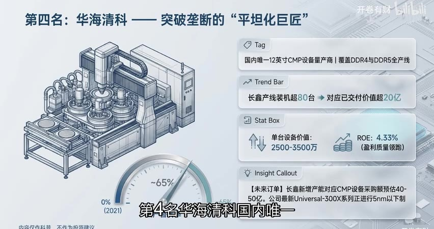
[02:18] 开卷有财 / 第四名：华海清科一突破垄断的“平坦化巨匠 / 国内唯一12英寸CMP设备量产商|覆盖DDR4与DDR5全产线 / TrendBar / 长鑫产线装机超80台→对应已交付价值超20亿 / StatBox / 单台设备价值： / ROE:4.33% / 2500-3500万 / （盈利质量领跑） / Insight Callout / ~65% / 【未来订单】长鑫新增产能对应CMP设备采购额预估40- / 0% / 50亿。公司最新Universal-300X系列正进行5nm以下制 / (2021) / 量产12英寸CMP设备覆盖D / 内容仅作科普 / 不作为投资建议
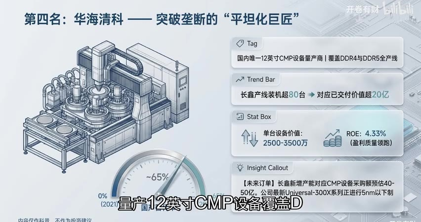
[02:21] 开卷有财 / 第四名：华海清科一突破垄断的“平坦化巨匠 / 国内唯一12英寸CMP设备量产商|覆盖DDR4与DDR5全产线 / TrendBar / 长鑫产线装机超80台→对应已交付价值超20亿 / StatBox / 单台设备价值： / ROE:4.33% / 2500-3500万 / （盈利质量领跑） / Insight Callout / ~65% / 【未来订单】长鑫新增产能对应CMP设备采购额预估40- / 0% / 50亿。公司最新Universal-300X系列正进行5nm以下制 / DR4和DDR5全产线长鑫装机 / (202 / 内容仅作科普 / 不作为投资建议
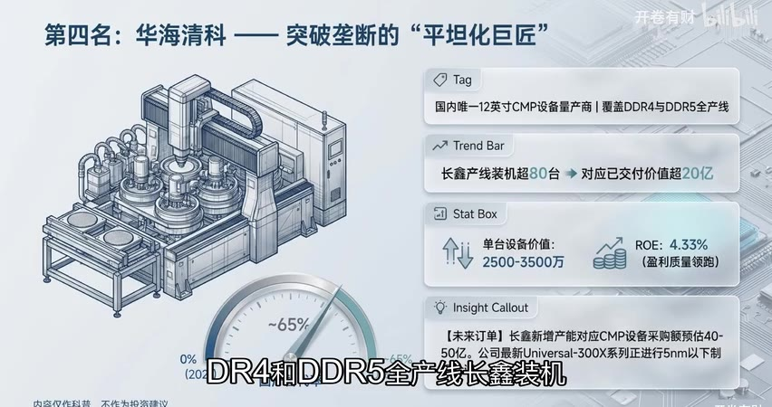
[02:24] 开卷有财 / 第四名：华海清科一突破垄断的“平坦化巨匠 / 国内唯一12英寸CMP设备量产商|覆盖DDR4与DDR5全产线 / TrendBar / 长鑫产线装机超80台→对应已交付价值超20亿 / StatBox / 单台设备价值： / ROE:4.33% / 2500-3500万 / （盈利质量领跑） / InsightCallout / ~65% / 【未来订单】长鑫新增产能对应CMP设备采购额预估40- / 0% / 对应 / 50亿。公司最新Universal-300X系列正进行5nm以下制 / (2021) / 国产替代率 / 程验证。 / 内容仅作科普 / 不作为投资建议
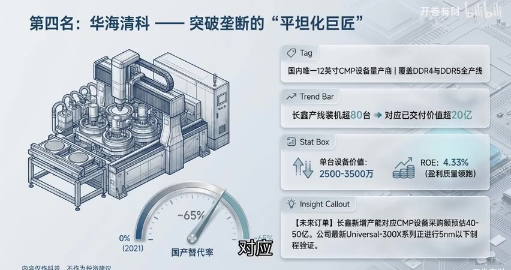
[02:27] 开卷有财 / 第四名：华海清科一突破垄断的“平坦化巨匠 / 国内唯一12英寸CMP设备量产商|覆盖DDR4与DDR5全产线 / TrendBar / 长鑫产线装机超80台→对应已交付价值超20亿 / StatBox / 单台设备价值： / ROE:4.33% / 2500-3500万 / （盈利质量领跑） / Insight Callout / ~65% / 【未来订单】长鑫新增产能对应CMP设备采购额预估40- / 0% / 50亿。公司最新Universal-300X系列正进行5nm以下制 / (2021) / 采购额40到50亿最新Uni / 内容仅作科普 / 不作为投资建议
[02:30] 开卷有财 / 第四名：华海清科一突破垄断的“平坦化巨匠 / 国内唯一12英寸CMP设备量产商|覆盖DDR4与DDR5全产线 / TrendBar / 长鑫产线装机超80台→对应已交付价值超20亿 / StatBox / 单台设备价值： / ROE:4.33% / 2500-3500万 / （盈利质量领跑） / QInsight Callout / ~65% / 【未来订单】长鑫新增产能对应CMP设备采购额预估40- / 0% / 50亿。公司最新Universal-300X系列正进行5nm以下制 / (2021) / 正做5纳米以下验证 / 内容仅作科普 / 不作为投资建议
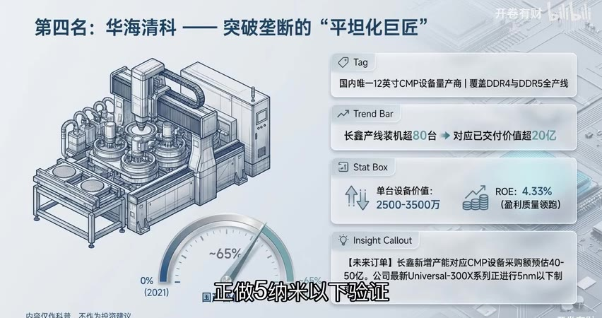
[02:33] 第三名：拓荆科技一原子级薄膜的“建筑师” / 开卷有财 / bilibi / 国内薄膜沉积设备（CVD/PVD/ALD）龙头| / 全技术路线覆盖 / 薄膜设备占晶圆厂总投资 / 20%-25%（最大单一品类） / 双基地年产超300台 / 2026年Q1营收同比翻倍 / 2025年 / (40%) / 2023年 / 【极致精度】DDR5的高K金属栅极需原子级沉积 / (15%) / 精度，单芯片薄膜超60层，设备价值量倍增。长 / ALD原子层沉积几乎完全第3名拓荆科技薄膜沉 / 蕴含超150亿采购预期。
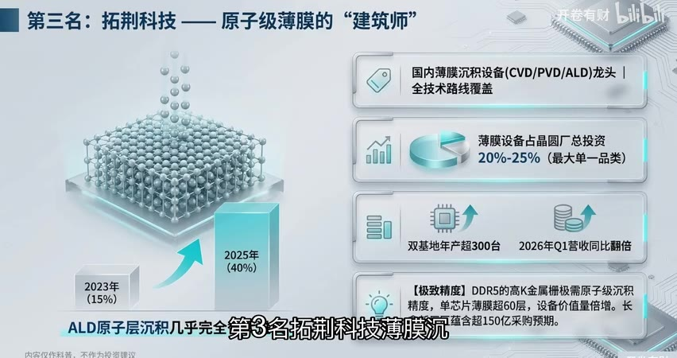
[02:36] 第三名：拓荆科技一原子级薄膜的“建筑师” / 开卷有财 / bilbil / 国内薄膜沉积设备（CVD/PVD/ALD）龙头| / 全技术路线覆盖 / 薄膜设备占晶圆厂总投资 / 20%-25%（最大单一品类） / 双基地年产超300台 / 2026年Q1营收同比翻倍 / 2025年 / (40%) / 2023年 / 【极致精度】DDR5的高K金属栅极需原子级沉积 / (15%) / 精度，单芯片薄膜超60层，设备价值量倍增。长 / ALD原子层沉积几平积设备龙头覆盖CVDPVD / 超150亿采购预期。
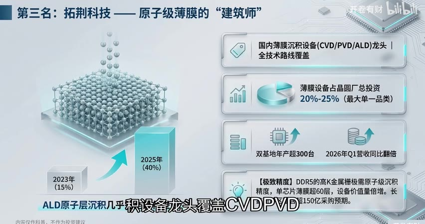
[02:39] 第三名：拓荆科技一原子级薄膜的“建筑师” / 开卷有财 / bilbi / 国内薄膜沉积设备（CVD/PVD/ALD）龙头| / 全技术路线覆盖 / 薄膜设备占晶圆厂总投资 / 20%-25%（最大单一品类） / 双基地年产超300台 / 2026年Q1营收同比翻倍 / 2025年 / (40%) / 2023年 / 【极致精度】DDR5的高K金属栅极需原子级沉积 / (15%) / 精度，单芯片薄膜超60层，设备价值量倍增。长
[02:42] 第三名：拓荆科技一原子级薄膜的“建筑师” / 开卷有财 / bilbi / 国内薄膜沉积设备（CVD/PVD/ALD）龙头| / 全技术路线覆盖 / 薄膜设备占晶圆厂总投资 / 20%-25%（最大单一品类） / 双基地年产超300台 / 2026年Q1营收同比翻倍 / 2025年 / (40%) / 2023年 / 【极致精度】DDR5的高K金属栅极需原子级沉积 / (15%) / 精度，单芯片薄膜超60层，设备价值量倍增。长 / ALD原子层沉积是晶圆网投资最大单一品类占两 / 亿采购预期。
[02:45] 第三名：拓荆科技一原子级薄膜的“建筑师” / 开卷有财 / bilibi / 555666 / 国内薄膜沉积设备（CVD/PVD/ALD）龙头| / 全技术路线覆盖 / 薄膜设备占晶圆厂总投资 / 20%-25%（最大单一品类） / 双基地年产超300台 / 2026年Q1营收同比翻倍 / 2025年 / (40%) / 2023年 / 【极致精度】DDR5的高K金属栅极需原子级沉积 / (15%) / 精度，单芯片薄膜超60层，设备价值量倍增。长 / ALD原子层沉积成以上双基地年产超300苔长鑫 / 亿采购预期。
[02:48] 第三名：拓荆科技一原子级薄膜的“建筑师” / 开卷有财 / bilibi / 66660 / 国内薄膜沉积设备（CVD/PVD/ALD）龙头| / 全技术路线覆盖 / 薄膜设备占晶圆厂总投资 / 20%-25%（最大单一品类） / 双基地年产超300台 / 2026年Q1营收同比翻倍 / 2025年 / (40%) / 2023年 / 【极致精度】DDR5的高K金属栅极需原子级沉积 / (15%) / 精度，单芯片薄膜超60层，设备价值量倍增。长 / ALD原子层沉积几新区蕴含超150亿采购预期 / 150亿采购预期。
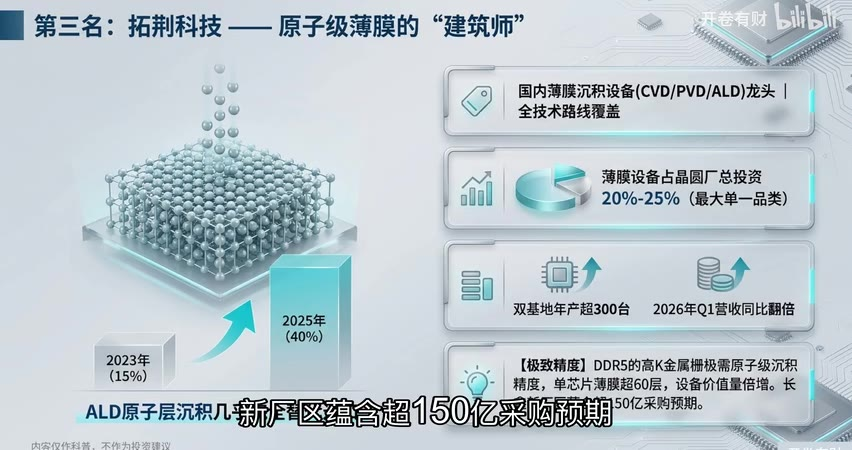
[02:51] 第三名：拓荆科技一原子级薄膜的“建筑师” / 开卷有财 / bilibi / 国内薄膜沉积设备（CVD/PVD/ALD）龙头| / 全技术路线覆盖 / 薄膜设备占晶圆厂总投资 / 20%-25%（最大单一品类） / 双基地年产超300台 / 2026年Q1营收同比翻倍 / 2025年 / (40%) / 2023年 / 【极致精度】DDR5的高K金属栅极需原子级沉积 / (15%) / 精度，单芯片薄膜超60层，设备价值量倍增。长 / ALD原子层沉积几乎完ALD巴几乎完全替代进口 / 含超150亿采购预期。
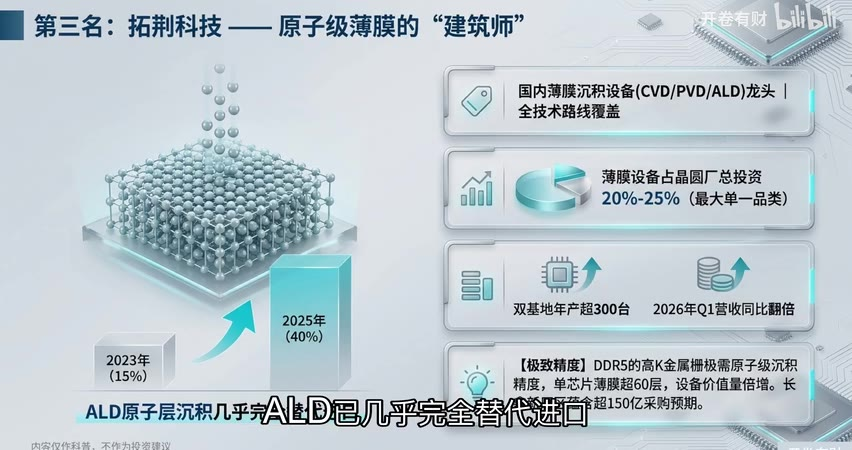
[02:54] 开卷有财 / 第二名：中微公司一挑战极限深宽比的“雕刻家 / 国内刻蚀设备技术天花板|CCP刻蚀达国际一流水平 / TrendBar / 长鑫产线装机超200台→占该类采购份额35%以上 / 深宽比超60:1 / StatBox / Q1营收同比涨： / 相比海外竞品： / 超90% / 便宜20%-25% / Insight Callout / 【爆发节点】2025年下半年DDR5产能拉升致使单季 / 出货超40台。长鑫新产能对应超200亿刻蚀采购，中 / 第2名中微公司刻蚀 / 下40%；但ICP刻蚀环节仍待全面突破。 / 内容仅作科普
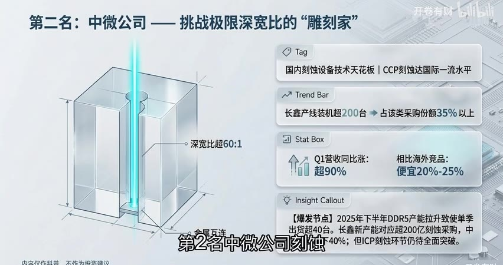
[02:57] 开卷有财 / 第二名：中微公司一挑战极限深宽比的“雕刻家 / 国内刻蚀设备技术天花板|CCP刻蚀达国际一流水平 / TrendBar / 长鑫产线装机超200台→占该类采购份额35%以上 / 深宽比超60:1 / StatBox / Q1营收同比涨： / 相比海外竞品： / 超90% / 便宜20%-25% / InsightCallout / 【爆发节点】2025年下半年DDR5产能拉升致使单季 / 设备天花板CCP达国际一流长鑫装环节仍待全面突破。 / 出货超40台。长鑫新产能对应超200亿刻蚀采购，中 / 内容仅作科普
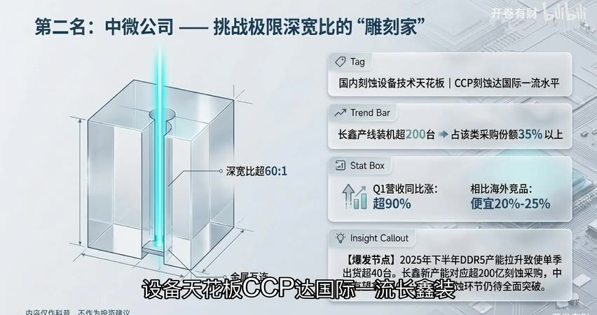
[03:00] 开卷有财 / 第二名：中微公司一挑战极限深宽比的“雕刻家 / 国内刻蚀设备技术天花板|CCP刻蚀达国际一流水平 / TrendBar / 长鑫产线装机超200台→占该类采购份额35%以上 / 深宽比超60:1 / StatBox / Q1营收同比涨： / 相比海外竞品： / 超90% / 便宜20%-25% / Insight Callout / 【爆发节点】2025年下半年DDR5产能拉升致使单季 / 60比1一季度 / 出货超40台。长鑫新产能对应超200亿刻蚀采购，中 / 望拿下40%；但ICP刻蚀环节仍待全面突破。 / 内容仅作科普
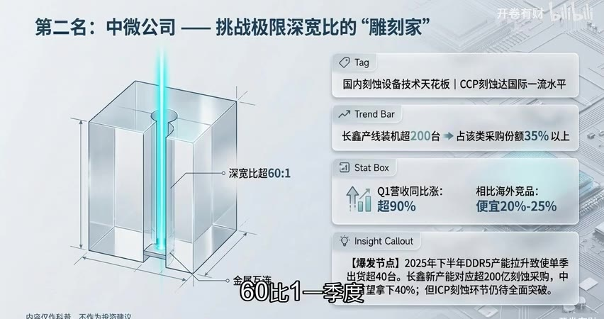
[03:03] 开卷有财 / 第二名：中微公司一挑战极限深宽比的“雕刻家 / 国内刻蚀设备技术天花板|CCP刻蚀达国际一流水平 / TrendBar / 长鑫产线装机超200台→占该类采购份额35%以上 / 深宽比超60:1 / StatBox / Q1营收同比涨： / 相比海外竞品： / 超90% / 便宜20%-25% / InsightCallout / 【爆发节点】2025年下半年DDR5产能拉升致使单季 / 出货超40台。长鑫新产能对应超200亿刻蚀采购，中 / 内容仅作科普
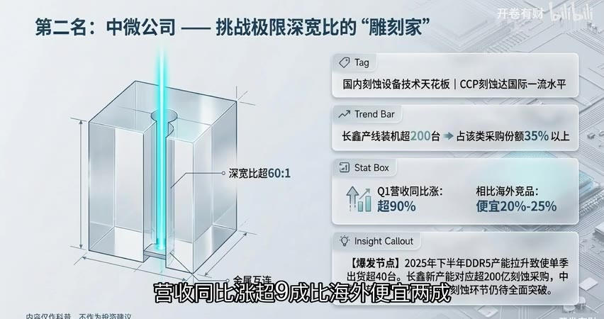
[03:06] 开卷有财 / 第二名：中微公司一挑战极限深宽比的“雕刻家 / 国内刻蚀设备技术天花板|CCP刻蚀达国际一流水平 / TrendBar / 长鑫产线装机超200台→占该类采购份额35%以上 / 深宽比超60:1 / StatBox / Q1营收同比涨： / 相比海外竞品： / 超90% / 便宜20%-25% / InsightCallout / 【爆发节点】2025年下半年DDR5产能拉升致使单季 / R5产能拉升后单季出货量 / 出货超40台。长鑫新产能对应超200亿刻蚀采购，中 / 但ICP刻蚀环节仍待全面突破。 / 内容仅作科普 / 不作为投资整议
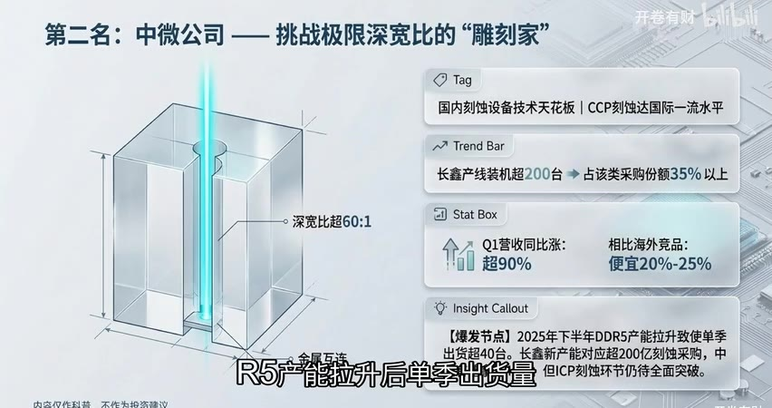
[03:09] 开卷有财 / 第一名：北方华创一无法撼动的“全能航母平台 / 国内设备最全的平台型龙头|覆盖前道一半以上工艺 / 项膜 / 独占长鑫超30%总设备采购份额（单一最大供应商） / 清洗 / 热处理 / 氧化扩散 / StatBox / 2026年Q1 / 长鑫募资中预计斩 / 营收破百亿 / 获50-60亿订单 / Insight Callout / 【降维打击】全能型选手的护城河是“打包解决方案” / 免去繁琐设备整合，单品公司无法匹敌。未来五年潜在 / 暴增超5倍 / 增量空间超360亿。（注：高端光刻仍需依赖ASML）。 / 内客仅作科普，不作为投资建议
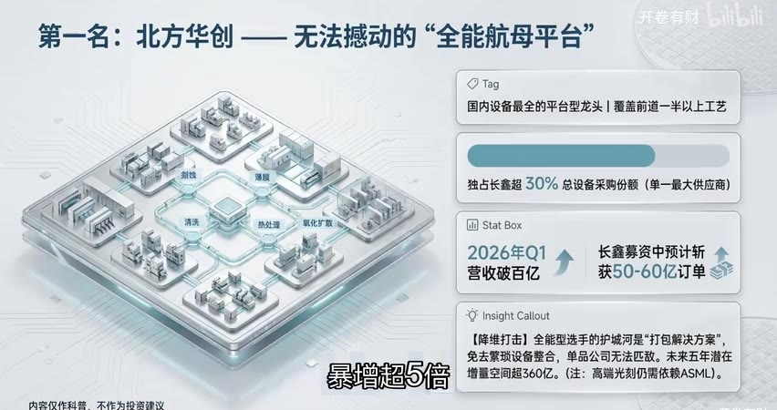
[03:12] 开卷有财 / 第一名：北方华创一无法撼动的“全能航母平台 / 国内设备最全的平台型龙头|覆盖前道一半以上工艺 / 刻校 / 项膜 / 独占长鑫超30%总设备采购份额（单一最大供应商） / 清洗 / 热处理 / 氧化扩散 / StatBox / 2026年Q1 / 长鑫募资中预计斩 / 营收破百亿 / 获50-60亿订单 / Insight Callout / 【降维打击】全能型选手的护城河是“打包解决方案”， / 免去繁琐设备整合，单品公司无法匹敌。未来五年潜在 / 母国内设备最全的平台型龙头 / （注：高端光刻仍需依赖ASML）。 / 内客仅作科普，不作为投资建议
[03:15] 开卷有财 / 第一名：北方华创一无法撼动的“全能航母平台 / 国内设备最全的平台型龙头|覆盖前道一半以上工艺 / 独占长鑫超30%总设备采购份额（单一最大供应商） / 清洗 / 热处理 / 氧化扩散 / StatBox / 2026年Q1 / 长鑫募资中预计斩 / 营收破百亿 / 获50-60亿订单 / InsightCallout / 【降维打击】全能型选手的护城河是“打包解决方案” / 免去繁琐设备整合，单品公司无法匹敌。未来五年潜在 / 约3成设备 / 增量空间超360亿。（注：高端光刻仍需依赖ASML）。 / 内容仅作科普，不作为投资建议
[03:18] 开卷有财 / 第一名：北方华创一无法撼动的“全能航母平台 / 国内设备最全的平台型龙头|覆盖前道一半以上工艺 / 独占长鑫超30%总设备采购份额（单一最大供应商） / 清洗 / 热处理 / 氧化扩散 / StatBox / 2026年Q1 / 长鑫募资中预计斩 / 营收破百亿 / 获50-60亿订单 / Insight Callout / 【降维打击】全能型选手的护城河是“打包解决方案”， / 免去繁琐设备整合，单品公司无法匹敌。未来五年潜在 / 采购单一最大供应商一季度营 / （注：高端光刻仍需依赖ASML）。 / 内容仅作科普，不作为投资建议
[03:21] 开卷有财山 / 第一名：北方华创一无法撼动的“全能航母平台 / 国内设备最全的平台型龙头|覆盖前道一半以上工艺 / 项膜 / 独占长鑫超30%总设备采购份额（单一最大供应商） / 清洗 / 热处理 / 氧化扩散 / StatBox / 2026年Q1 / 长鑫募资中预计斩 / 营收破百亿 / 获50-60亿订单 / Insight Callout / 【降维打击】全能型选手的护城河是“打包解决方案”， / 免去繁琐设备整合，单品公司无法匹敌。未来五年潜在 / 订单护 / 增量空间超360亿。（注：高端光刻仍需依赖ASML）。 / 内客仅作科普，不作为投资建议
[03:24] 开卷有财 / 第一名：北方华创一无法撼动的“全能航母平台 / 国内设备最全的平台型龙头|覆盖前道一半以上工艺 / 项膜 / 独占长鑫超30%总设备采购份额（单一最大供应商） / 清洗 / 热处理 / 氧化扩散 / StatBox / 2026年Q1 / 长鑫募资中预计斩 / 营收破百亿 / 获50-60亿订单 / Insight Callout / 【降维打击】全能型选手的护城河是“打包解决方案”， / 免去繁琐设备整合，单品公司无法匹敌。未来五年潜在 / 城河在于打包解决方案增量空间超 / 高端光刻仍需依赖ASML）。 / 内客仅作科普、不作为投资建议
[03:27] 开卷有财 / 第一名：北方华创一无法撼动的“全能航母平台 / 国内设备最全的平台型龙头|覆盖前道一半以上工艺 / 项膜 / 独占长鑫超30%总设备采购份额（单一最大供应商） / 清洗 / 热处理 / 氧化扩散 / StatBox / 2026年Q1 / 长鑫募资中预计斩 / 营收破百亿 / 获50-60亿订单 / Insight Callout / 【降维打击】全能型选手的护城河是“打包解决方案”， / 360亿 / 免去繁琐设备整合，单品公司无法匹敌。未来五年潜在 / 增量空间超360亿。（注：高端光刻仍需依赖ASML）。 / 内客仅作科普，不作为投资建议
[03:30] 开卷有财册 / 第一名：北方华创一无法撼动的“全能航母平台 / 国内设备最全的平台型龙头|覆盖前道一半以上工艺 / 独占长鑫超30%总设备采购份额（单一最大供应商） / 清洗 / 热处理 / 氧化扩散 / StatBox / 2026年Q1 / 长鑫募资中预计斩 / 营收破百亿 / 获50-60亿订单 / Insight Callout / 【降维打击】全能型选手的护城河是“打包解决方案”， / 免去繁琐设备整合，单品公司无法匹敌。未来五年潜在 / 高端光刻仍需ASML这是最后拼图 / 高端光刻仍需依赖ASML）。 / 内容仅作科普，不作为投资建议
[03:33] 终局视野：长鑫国产替代全景生态圈 / 【封测与销售】 / 【材料】 / 安集料技 / 【设备】 / 北方华创 / 中微公司 / 长电科技 / 兆易创斯 / 长鑫存储 / (CXMT) / 沪硅产业 / 雅克科技 / 盛美上海 / 拓荆料技 / 华海清科 / 盛美上海 / 生态成型 / 板块共振 / 价值底牌 / 从点状突破走向全链条闭环。设备端 / 千亿级的资本开支不仅造就了长鑫的 / 替代的速度取决于扩产的决心。在这场 / 强势引领，材料端加速渗透。 / 突破到全链条闭环设备 / 全球硅基争夺战中，供应链的深度绑定 / 已成为国产力量的最强底牌。
[03:36] 终局视野：长鑫国产替代全景生态圈 / 【封测与销售】 / 【材料】 / 安集料技 / 【设备】 / 北方华创 / 中微公司 / 长电科技 / 兆易创新 / 长鑫存储 / (CXMT) / 沪硅产业 / 雅克科技 / 盛美上海 / 拓荆料技 / 华海清科 / 盛美上海 / 生态成型 / 板块共振 / 价值底牌 / 从点状突破走向全链条闭环。设备端 / 千亿级的资本开支不仅造就了长鑫的 / 替代的速度取决于扩产的决心。在这场 / 强势引领，材料端加速渗 / 朵夺战中，供应链的深度绑定
[03:39] 终局视野：长鑫国产替代全景生态圈 / 【封测与销售】 / 【材料】 / 安集料技 / 【设备】 / 北方华创 / 中微公司 / 长电科技 / 兆易创新 / 长鑫存储 / (CXMT) / 沪硅产业 / 雅克科技 / 盛美上海 / 拓荆料技 / 华海清科 / 盛美上海 / 生态成型 / 板块共振 / 价值底牌 / 从点状突破走向全链条闭环。设备端 / 千亿级的资本开支不仅造就了长鑫的 / 替代的速度取决于扩产的决心。在这场 / 强势引领，材料端加速渗透。 / 开支不只造就长鑫更托举 / 全球硅基争夺战中，供应链的深度绑定 / 已成为国产力量的最强底牌。
[03:42] 终局视野：长鑫国产替代全景生态圈 / 【封测与销售】 / 【材料】 / 安集料技 / 【设备】 / 北方华创 / 中微公司 / 长电科技 / 兆易创新 / 长鑫存储 / (CXMT) / 沪硅产业 / 雅克科技 / 盛美上海 / 拓荆料技 / 华海清科 / 盛美上海 / 生态成型 / 板块共振 / 价值底牌 / 从点状突破走向全链条闭环。设备端 / 千亿级的资本开支不仅造就了长鑫的 / 替代的速度取决于扩产的决心。在这场
[03:45] 终局视野：长鑫国产替代全景生态圈 / 【封测与销售】 / 【材料】 / 安集料技 / 【设备】 / 北方华创 / 中微公司 / 长电科技 / 兆易创新 / 长鑫存储 / (CXMT) / 沪硅产业 / 雅克科技 / 盛美上海 / 拓荆料技 / 华海清科 / 盛美上海 / 生态成型 / 板块共振 / 价值底牌 / 从点状突破走向全链条闭环。设备端 / 千亿级的资本开支不仅造就了长鑫的 / 替代的速度取决于扩产的决心。在这场 / 强势引领，材料端加速渗透。 / 供应链深度绑定 / 全球硅基争夺战中，供应链的深度绑定 / 已成为国产力量的最强底牌。
[03:48] 终局视野：长鑫国产替代全景生态圈 / 【封测与销售】 / 【材料】 / 安集料技 / 【设备】 / 北方华创 / 中微公司 / 长电科技 / 兆易创新 / 长鑫存储 / (CXMT) / 沪硅产业 / 雅克科技 / 盛美上海 / 拓荆料技 / 华海清科 / 盛美上海 / 生态成型 / 板块共振 / 价值底牌 / 从点状突破走向全链条闭环。设备端 / 千亿级的资本开支不仅造就了长鑫的 / 替代的速度取决于扩产的决心。在这场 / 强势引领，材料端加速渗透。 / 已是国产力量最强底牌以 / 全球硅基争夺战中，供应链的深度绑定 / 已成为国产力量的最强底牌。
[03:51] 终局视野：长鑫国产替代全景生态圈 / 【封测与销售】 / 【材料】 / 安集料技 / 【设备】 / 北方华创 / 中微公司 / 长电科技 / 兆易创新 / 长鑫存储 / (CXMT) / 沪硅产业 / 雅克科技 / 盛美上海 / 拓荆料技 / 华海清科 / 盛美上海 / 生态成型 / 板块共振 / 价值底牌 / 从点状突破走向全链条闭环。设备端 / 千亿级的资本开支不仅造就了长鑫的 / 替代的速度取决于扩产的决心。在这场 / 强势引领，材料端加速渗透。 / 全球硅基争夺战中，供应链的深度绑定 / 已成为国产力量的最强底牌。